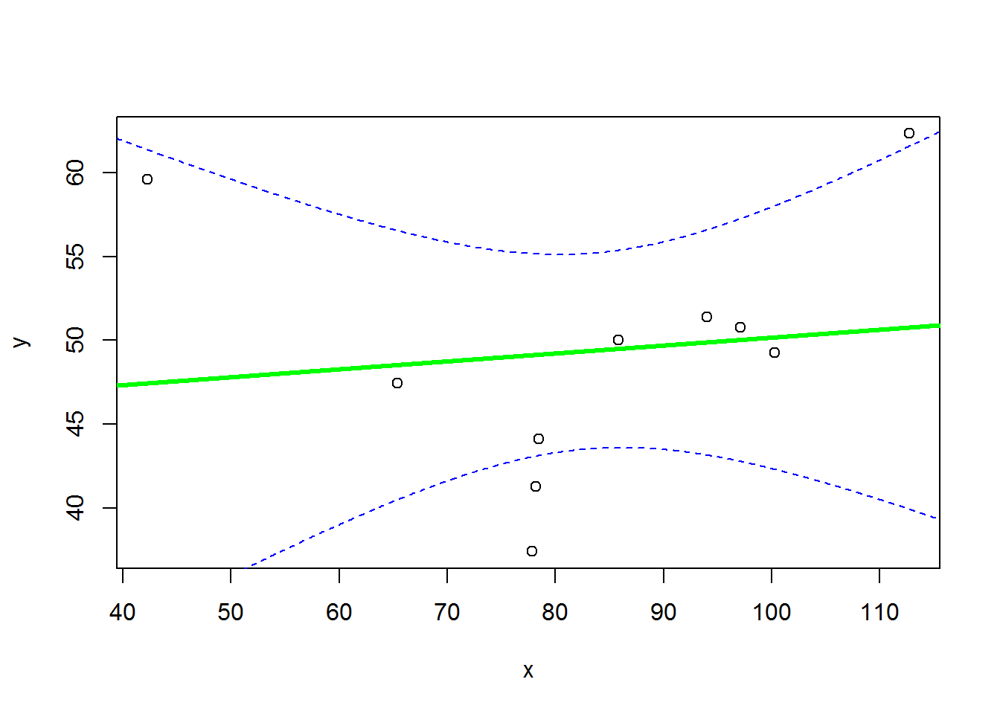
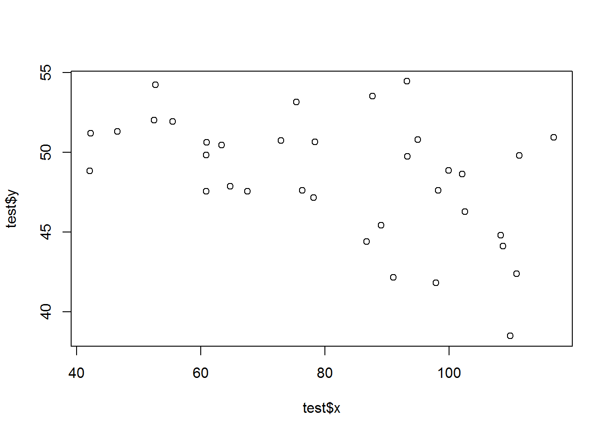
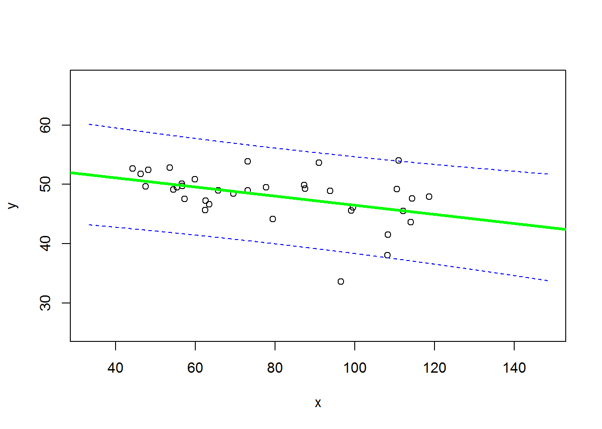
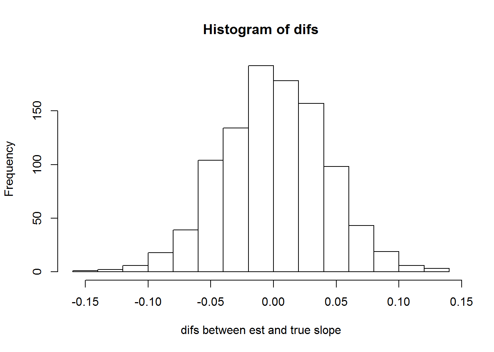
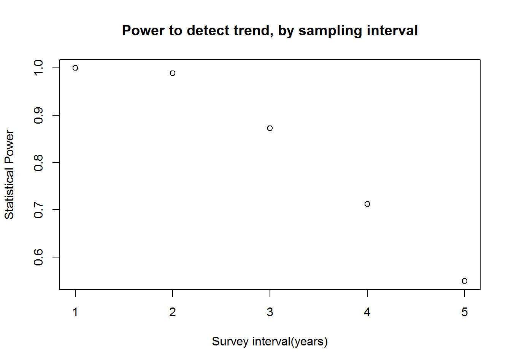
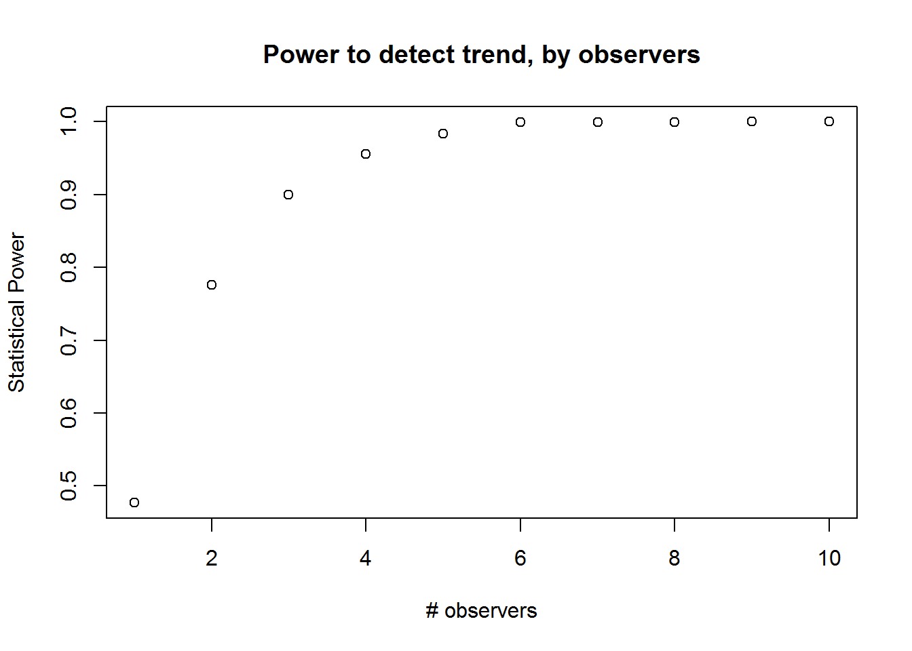

Lab Exercise 2
NRES 746
Fall 2018
The Virtual Ecologist
As with all lab reports, your answers will either take the form of R functions or short written responses (submitted together in a Word document). The R functions should be stored in an R script file (‘.R’ extension). To allow me to evaluate your work more efficiently, please name your R script using the following convention: “[your first name]_[your last name]_lab2.R“. So my submission would be”kevin_shoemaker_lab2.R“. The name of your Word docuement doesn’t matter, as long as you submit via WebCampus.
Please submit the R script and the Word document via WebCampus by midnight on the due date (one week after the final lab session allocated for this topic – here, Oct. 2, 2018). You can work in groups but please submit the materials individually.
When writing functions, it’s often easiest to start off by writing a script, and then when you have everything working properly, wrap the script into a function. But still remember to test your function!
Please comment each line of your code. Don’t be afraid of for loops and inefficient coding practices… And of course be dangerous!
Final Projects
If you haven’t already, please list your final project information (project title, group members etc.) on our shared Google sheets document
Simulating Data in R
First, review the basic approach to simulating data in the “Virtual Ecologist” lecture. Recall that a data simulation model can be constructed as a deterministic component (defining underlying relationships between the process of interest and a set of covariates), with a stochastic component wrapped around it (defining the “noise”, or “error” associated with each observation from the process of interest).
CHALLENGE 1: model verification, part 1
Simulate data that meet the standard assumptions of univariate linear regression (homoskedasticity, independence, normal/Gaussian errors). Then run the “lm()” function on your simulated data and examine how closely the parameter estimates match the “true” parameter value.
Exercise 1a. Write a function called “LMDataSim()” for drawing a set of random observations from a defined linear relationship (that meets all the assumptions of ordinary linear regression). This function should be specified as follows:
- input:
- sample.size = a scalar (integer) specifying the number of observations to simulate
- xlimits = a vector of length 2 specifying the minimum and maximum values of the covariate “x”
- coefs = a vector of length 2 specifying (in order) the intercept and slope of the relationship between “x” and the expected response
- stdev = a scalar specifying the standard deviation of the residual errors.
- suggested algorithm:
- sample random values (size=“sample.size”) from a uniform distribution (min and max defined by “xlimits”) to represent the covariate (use the “runif()” function)
- Use the defined linear model (defined by “coefs”) to determine the expected value of the response.
- Add “noise” to the expected values according to the “stdev” parameter (use the “rnorm()” function)
- sample random values (size=“sample.size”) from a uniform distribution (min and max defined by “xlimits”) to represent the covariate (use the “runif()” function)
- return:
- out = a data frame with number of rows equal to “sample.size”, and two columns. The first column should represent the values of the “x” variable and the second column should represent stochastic observations from the known model defined by “coefs” and “stdev”
- input:
Test your function- for example, using the following code:
LMDataSim(sample.size=10,xlimits=c(40,120),coefs=c(55,-0.09),stdev=6.8)## x y
## 1 108.18806 53.95422
## 2 114.88387 63.76866
## 3 116.09147 43.77021
## 4 67.72842 45.58058
## 5 64.06991 60.89321
## 6 64.81088 46.27697
## 7 106.69963 33.54274
## 8 82.36297 48.69944
## 9 116.77323 31.11868
## 10 55.22169 48.04038Exercise 1b. Write a function called “LMVerify_pt1()” for computing how well the coefficients and variance from R’s “lm()” function match the known coefficients of the model used to generate the data. This function should be specified as follows:
- input:
- sim.dataset = a data frame representing data simulated from a linear model with known coefficients (and known residual variance). The first column should represent the values of the “x” variable and the second column should represent stochastic observations from the known model defined by “trueparams”
- trueparams = a vector of length 3 specifying the intercept, slope, and standard deviation of the residual errors of the known relationship between “x” and the response
- suggested algorithm:
- Use the “lm()” function to estimate the coefficients and residual standard deviation of the relationships between column 1 and column 2 of “sim.dataset” (regress column 2 on column 1)
- Extract and store the regression coefficients (intercept and slope parameter)
- Extract an estimate of the residual standard deviation of the regression relationship.
- Subtract the known parameter values (intercept, slope, error sd) from the regression parameters.
- Plot the estimated regression line with a 95% confidence interval around the estimated regression line (e.g., computed using the “predict()” function). Overlay the “true” linear relationship (from the known data generating model). Add a legend to differentiate the true linear relationship from the estimated regression line.
- Use an “ifelse()” statement to record whether or not the 95% confidence interval around the slope parameter estimate (estimated from the data) contains the “true” parameter value (if the 95% confidence interval contains the true value, then TRUE, otherwise FALSE)
- Use the “lm()” function to estimate the coefficients and residual standard deviation of the relationships between column 1 and column 2 of “sim.dataset” (regress column 2 on column 1)
- return:
- out = a list of length 2 with the following elements:
- a vector of length 3 representing (in order) the differences between the known parameters (intercept, slope, error sd) and the estimates from a linear regression model
- a logical (TRUE/FALSE) representing whether or not the 95% confidence interval around the slope parameter estimate (estimated from the data) contains the “true” parameter value.
- out = a list of length 2 with the following elements:
- input:
Test your function- for example, using the following code:
simdat <- LMDataSim(sample.size=10,xlimits=c(40,120),coefs=c(55,-0.09),stdev=6.8)
LMVerify_pt1(sim.dataset = simdat, trueparams = c(55,-0.09,6.8))
## $difs
## x y stdev
## -9.5642181 0.1372222 0.7283977
##
## $inside
## [1] TRUERecall that you can use the ‘predict’ function to compute confidence intervals and prediction intervals:
predict.lm(yourmodel, interval = c("confidence"), level = 0.95) # for confidence interval
predict.lm(yourmodel, interval = c("prediction"), level = 0.95) # for prediction intervalThe predict function allows you to predict a response (and estimate confidence intervals) for any arbitrary covariate values. To do this you need to add a “newdata” argument to the predict function. For example:
nd <- data.frame(x=seq(lb,ub,1)) # note that the predictor names need to match the predictor names in the model object!
predict.lm(yourmodel, newdata=nd, interval = c("confidence"), level = 0.95) # for confidence intervalNote that the prediction interval code may occasionally return some warnings- which you may ignore!
- Exercise 1c. Does the 95% confidence interval around the slope estimate (estimated from simulated data with a sample size of 10) contain the “true” slope parameter value 95% of the time (a frequentist question!). In your Word document, explain how you addressed this question. Did you need more than 100 simulated data sets to answer this question?
ASIDE: review of conditional statements in R
NOTE: The previous challenge problem requires the use of “conditional” statements. That is, if a condition is true, do something. If the condition is false, do something else. The syntax for doing this in R is:
if(TRUE){
do something
} else{
do something else
}
Let’s say I want to determine the number of vector elements that are cleanly divisible by 3. I could write the following code:
inputvector <- c(1:100) # vector of interest
div_by_three <- 0
for(i in 1:length(inputvector)){
if(i%%3==0){ # if there is zero remainder after dividing by three
div_by_three <- div_by_three+1 # then increment the storage variable
}
}
div_by_three## [1] 33An alternative way to do this would be to do use the “which()” function. This tells you which indices in a vector correspond to “TRUE” conditions.
For example,
which(c(FALSE,TRUE,TRUE,FALSE))## [1] 2 3Using “which”, we could re-write the above code to take up just one line!
div_by_three <- length(which(inputvector%%3==0))CHALLENGE 2: model verification, part 2
How might your results from part 1 change if your data simulations DID NOT meet the assumptions of ordinary linear regression- e.g., if the variances were not homogeneous?
To test this, you are asked to write an R function to generate data that violates a basic assumption regarding the error distribution of standard linear regression. Specifically, your function should generate “heteroskedastic” data, such that the variance of the residuals depends on the magnitude of the covariate “x”. For this exercise, you’ll still need to specify a linear relationship (y=ax+b) between your response and predictor - the only difference is that the residual variance is no longer homogeneous.
Some other potential violations of standard assumtions we could also introduce into our data simulations if we wanted:
- use a non-normal error distribution
- introduce temporal autocorrelation
- introduce other types of correlation structure among the observations
use a mixture of two error distributions
Exercise 2a. Pick one of the violations in the above list. In your Word document, please explain how biological or sampling processes could yield data that violate standard regression assumptions in this specified way. Be as brief as possible in your response!
Exercise 2b. Write a function called “LMDataSim2()” for drawing a set of random observations from a defined linear relationship (that meets all the assumptions of ordinary linear regression except for homoskedasticity). This function should be specified as follows:
- input:
- sample.size = a scalar (integer) specifying the number of observations to simulate
- xlimits = a vector of length 2 specifying the minimum and maximum values of the covariate “x”
- coefs = a vector of length 2 specifying (in order) the intercept and slope of the relationship between “x” and the expected response -
- sd_coefs = a vector of length 2 specifying (in order) coefficients for a “heteroskedasticity” model specifies standard deviation as a linear function of the covariate “x”
- suggested algorithm:
- sample random values (size=“sample.size”) from a uniform distribution (min and max defined by “xlimits”) to represent the covariate (use the “runif()” function)
- Use the defined linear model (defined by “coefs”) to determine the expected value of the response.
- Use the defined linear model (defined by “sd_coefs”) to determine the expected value of the standard deviation of the response.
- Add “noise” to the expected values according to the “stdev” parameter (use the “rnorm()” function). Note that this should now depend on the covariate “x”.
- sample random values (size=“sample.size”) from a uniform distribution (min and max defined by “xlimits”) to represent the covariate (use the “runif()” function)
- return:
- out = a data frame with number of rows equal to “sample.size”, and two columns. The first column should represent the values of the “x” variable and the second column should represent stochastic observations from the known model defined by “coefs” and “stdev”
- input:
NOTE: make sure that your linear model for stdev does not go negative - this will return “NaN” values (not a number!).
Test your function- for example, using the following code:
test <- LMDataSim2(sample.size=35,xlimits=c(40,120),coefs=c(55,-0.09),sd_coefs=c(-0.2,0.04))
plot(test$x,test$y)
Exercise 2c. Write a function called “LMVerify_pt2()” for computing how well the coefficients from R’s “lm()” function match the known coefficients of the model used to generate the data. This function should be specified as follows:
- input:
- sim.dataset = a data frame representing data simulated from a linear model with known coefficients (and known residual variance, with variance dependent on the covariate “x”). The first column should represent the values of the “x” variable and the second column should represent stochastic observations from the known model defined by “trueparams”
- trueparams = a vector of length 2 specifying the intercept and slope of the known relationship between “x” and the response
- suggested algorithm:
- Use the “lm()” function to estimate the coefficients of the relationships between column 1 and column 2 of “sim.dataset” (regress column 2 on column 1)
- Extract and store the regression coefficients (intercept and slope parameter)
- Subtract the known parameter values (intercept, slope) from the regression parameters.
- Plot the estimated regression line with a 95% prediction interval around the estimated regression line (e.g., computed using the “predict()” function). Overlay the “observations” from the known data generating model.
- Use an “ifelse()” statement to record whether or not the 95% confidence interval around the slope parameter estimate (estimated from the data) contains the “true” parameter value (if the 95% confidence interval contains the true value, then TRUE, otherwise FALSE)
- Use the “lm()” function to estimate the coefficients of the relationships between column 1 and column 2 of “sim.dataset” (regress column 2 on column 1)
- return:
- out = a list of length 2 with the following elements:
- a vector of length 2 representing (in order) the differences between the known parameters (intercept, slope) and the estimates from a linear regression model
- a logical (TRUE/FALSE) representing whether or not the 95% confidence interval around the slope parameter estimate (estimated from the data) contains the “true” parameter value.
- out = a list of length 2 with the following elements:
- input:
Test your function- for example, using the following code:
simdat <- LMDataSim2(sample.size=35,xlimits=c(40,120),coefs=c(55,-0.09),sd_coefs=c(-0.3,0.05))
LMVerify_pt2(sim.dataset = simdat, trueparams = c(55,-0.09))
## $difs
## intercept x
## -0.78738341 0.01261232
##
## $inside
## [1] TRUE- Exercise 2d. In your Word document, please answer the following questions:
- Is the estimate of the slope parameter (obtained using the ‘lm()’ function) biased? [note: statistical bias of an estimator is the difference between the estimator’s expected value and the true value of the parameter being estimated]. Ideally, an estimator should be unbiased (bias=0). Briefly explain how you got your answer.

## [1] 0.0001674544- Evaluate goodness-of-fit by visualizing the “cloud” of (fake) data produced by the true model against the prediction interval from the estimated model (generated using the ‘lm()’ function). In your Word document, please include this figure and describe very briefly how this figure helps you to evaluate goodness-of-fit (the degree to which your data could plausibly have been generated by the fitted model)

CHALLENGE 3: Power analysis!
Review the “power analysis” section of the Virtual Ecologist lecture, and complete the following challenge problems. Recall that we are designing a monitoring program for a population of an at-risk species, and we want to have at least a 75% chance of detecting a decline of 25% or more over a 10 year period. Let’s assume that we are using visual counts, and that the probability of encountering each organism visually is 2% per person-day. The most recent population estimate was 1000.
- Exercise 3a. Develop a function called “GetPower()” that evaluates the statistical power to detect a decline under user-specified types of monitoring designs (e.g., varying numbers of observers, intervals between successive surveys). This function should be specified as follows:
- input:
- initabund: true initial population abundance (default=1000)
- nreps: number of replicated long-term monitoring data sets to generate in order to evaluate power
- trend: proportional change in population size each year
- years: duration of simulation (in years)
- days: survey duration, in days
- observers: number of survey participants each day of each survey year
- survint: survey interval, in years (e.g., 2 means surveys are conducted every other year, 3 means surveys are conducted every 3 years)
- alpha: acceptable type-I error rate below which we are confident to make the call that a population is declining.
- suggested algorithm:
- Up to you!!! You can make use of the functions in the “Virtual Ecologist” lecture.
- return:
- A single floating point (real number) value representing the statistical power to detect a decline under the specified default parameters and alpha level. This represents the percent of replicate data sets for which you correctly reject the null hypothesis of “no decline”.
- input:
And we can test our new function using a command like this:
GetPower(survint=3) # test the new function## The statistical power to detect a decline for the default parameters is: 0.902## [1] 0.902- Exercise 3b. For each variable element of the survey design (survey interval, number of observers, days per survey bout), evaluate how statistical power changes across a range of plausible values. Plot out these relationships. In your Word document, provide ONE of these plots, describe (briefly!) how you produced the plot, and how you might use this plot to make a specific recommendation about survey protocols for this species.

- Exercise 3c. Let’s factor in dollar amounts. Let’s assume each observer is paid $200 per day. In addition, let’s assume that the site is fairly remote and it costs $2000 to mount a field expedition (regardless of the number of field technicians). Can you identify a survey strategy to minimize cost while meeting the objective??? What is the optimal survey design in your opinion? Briefly describe how you arrived at this conclusion. [NOTE: don’t overthink this one- you don’t need to find the true optimal solution, just find a solution that meets the objective at relatively low cost and justify your answer!]
## observers days survint
## 4 4 1 4